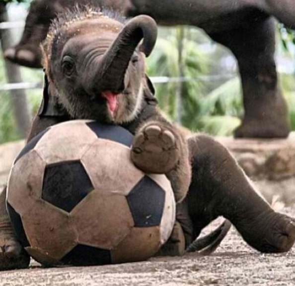

The finger nail trade
The finger nail trade. The slaughter of rhinos. The ending of lives, all for the finger nail trade. You’re probably thinking, what the hell is he talking about? So if you are, I’ll be the one to inform you. Rhino poaching; Rhinos being killed for their horns. Their horns are actually made from the same thing as finger nails and hair, keratin. These are made into medicines which have the same effect as biting your finger nails; absolutely none. Now not all the people who used to do that do so anymore because it’s too expensive, but the finger nail trade continues, as a show of power. Billionaires put some in their wine!
You might expect their giant neighbours the elephants to be better off, but I’ll tell you about elephants. 40,000 elephants are killed every year. 1,095 rhinos are killed each year. But the whole thing is getting worse by the second, maybe it’s 40,999 now. Or for rhinos it could be, 1,899. It could be any number for rhinos and elephants. Their population is shrinking at an incredible rate. In 5-10 years, it’ll all be over.

Elephants are killed for their ivory. Something just used for wealthy people to show off their power, you might think. No. Dealers sell to shops everywhere, from Africa, the tusks travel all over the world.The Kenyan government decided to make a statement a few years back. They burned all the ivory of elephants that died of natural causes and the confiscated elephant tusks. There were approximately 5 piles of 2 meters of ivory. It all went up in flame. 5x2=10. The illegal trade apparently would have 10x more. 100. That’s a lot of ivory. Depressing isn’t it? Why do people do it? Just to get rich? I heard a third of all criminals caught are mentally insane ( I’m deadly serious ) does that count to poachers? And if it does then that means we CAN help. Africa isn’t known for its great health system ( If that confused you let me capitalise it. THEIR HEALTH SYSTEM IS TERRIBLE ) If there were more doctors, therapists and especially politicians helping to boost the health system then would poaching slow? I know it won’t damn stop it but ,if it existed, I think it’ll help.

Anti-poachers also help by tracking and catching ( and sometimes even killing ) the poachers. It’s a dangerous occupation, for the poachers have guns, and the anti-poachers have guns so casualties on both sides, do happen. Perfect for every mad psychopath who doesn’t want to be the bad guy. Another word for anti-poachers are rangers, which I’ll use in all further correspondence as typing anti-poachers is an absolute pain. There’s this true story about a ranger who was fighting poachers and got shot in the leg. He probably would of survived if it wasn’t for the circumstances. He bled to death. Lovely isn’t it?
Journalists also help by raising awareness ( Thank you. Thank you ) about all the death and destruction that’s happening all around us. All you oblivious citizens need to become less oblivious. Immediately. Otherwise, say goodbye to a bunch of animals that make human existence possible.
Now i’ll move back onto rhinos. Or more specifically Northern White Rhinos. There are only three of them left in the world. All there brethren are dead. They are incapable of breeding and there only hope is a sperm of the Southern White Rhino. There are many doubts of this working, and I personally hope it’ll work, but I doubt it will. Wake up and notice The Finger Nail Trade.
Savingrhinos.org is an organisation that has loads of links to other websites, such as WWF adopt a rhino and other websites. (Click here to go to the WWF website). Rhinos are in danger, YOU can help.